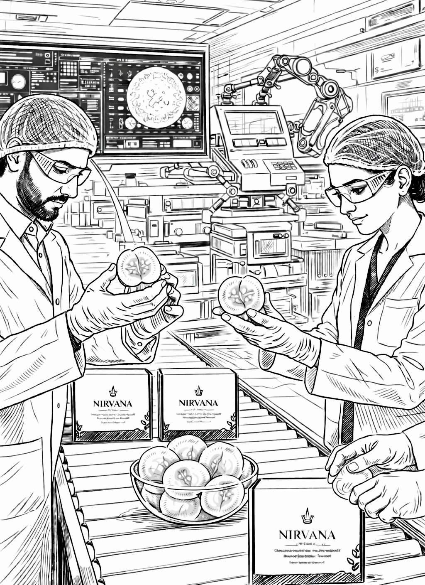

Premium Standard with Heritage
At Nirvana, we believe that true purity cannot be rushed. Unlike modern agriculture which favors fast-growing hybrids, our Ice Apples are harvested exclusively from Heritage Palmyra Palms. These majestic trees are a testament to time, requiring a minimum of 20 years of growth before yielding their very first harvest.
The Luxury of Patience
Because we refuse to use hybrids or chemical growth-boosters, our fruit remains a rare and scarce treasure. This slow-maturing process ensures that every Ice Apple is packed with a concentrated profile of minerals and antioxidants that younger, lab-grown varieties simply cannot match.